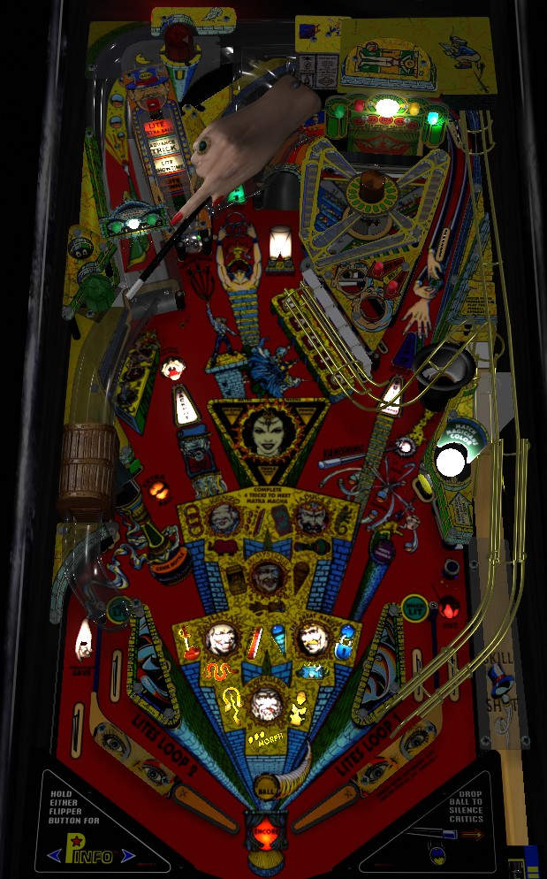

Not to be confused with Theatre of Magic (Bally Williams, 1995) or Magic (Stern Electronics, 1979).
For quick points, shoot the flashing shots to earn Tricks, worth a minimum of 10,000,000 points each. For high scores, play 3-ball multiball: complete the Magic drop targets or the 3-bank of standup targets to light locks at the left ramp. Be sure to lock 2 balls at the left ramp before shooting the scoop in the lower right so that you start Magic Mayhem 3-ball multiball instead of Mini Mayhem 2-ball. During Magic Mayhem, the left ramp scores jackpot; the right orbit lights jackpot, or adds 10,000,000 to the jackpot for the rest of the game if the jackpot itself was already lit.
There are two flavors of skill shot: a full plunge, which does a loop-de-loop above the magic hat and rolls up and around the center loop, or a short plunge, which falls off the loop-de-loop into the magic hat itself. On odd-numbered balls, the skill shot is the magic hat short plunge, which scores 5,000,000 points. On even-numbered balls, the skill shot is the full plunge to the center loop, which starts Super Spinner where the spinner scores 100,000 points per spin for about 30 seconds.
If the center loop or magic hat are lit for other features, they can be awarded off the plunge. The first trick of the game, Nostradamus 1, awards 10,000,000 points for making the center loop, which immediately overshadows the 5,000,000 you would get from the magic hat skill shot. If one or more balls have been locked, a short plunge into the magic hat will immediately start Mini or Magic Mayhem, depending on whether 1 or 2 balls were locked first. Following a lock, in fact, the game tells you that the skill shot is starting multiball from the magic hat. This is not advised unless 2 balls have been locked, and the magic hat starts the full Magic Mayhem.
The basic game progression consists of Magic Tricks: 21 of them, in three groups of 7, each consisting of a handful of shots to one of the various features in the game. Tricks are always played in the same order. Level 1 tricks score 10,000,000 points each; level 2 tricks score 20,000,000 each; level 3 tricks score 30,000,000 each.
Level 1
Level 2
Level 3
After clearing Defeat the Power, the entire Trick sequence resets. On the second lap, you'll start again at level 1, but completing the level 1 tricks for the second time will score 40,000,000 points each. I am not sure how high the per-trick value can go if the entire progression is completed multiple times.
Completing the Magic drop targets in the center of the table lights one lock at the left ramp. (One lock is lit for free at the start of the game.) Shooting the left ramp with lock lit causes the magic wand magnet system to drop the ball in the trunk on the right. Lock status is indicated by the sign above the left ramp; solidly lit green lights represent locked balls, and flashing green lights represent available locks. After at least one lock has been made, multiball is available with the next shot to the lower right scoop or magic hat skill shot.
If the lower right scoop is shot with 1 ball locked, Mini Mayhem multiball begins with 2 balls in play. If 2 balls were locked first, shooting the right scoop starts Magic Mayhem multiball with 3 balls. Rules between Mini Mayhem and Magic Mayhem are similar: shoot the left ramp to score and unlight the jackpot, and shoot the right orbit to relight the jackpot. In Mini Mayhem, the jackpot is always worth 20,000,000 points, and cannot be raised. In Magic Mayhem, the jackpot is worth 20,000,000 points at the start of the game, but shooting the right orbit again when jackpot is already lit increases the jackpot by 10,000,000 points. The jackpot is never reset once it is raised; it holds its value after being collected, and in all future Magic Mayhem multiballs. There is no meaningful limit to the value of the Magic Mayhem jackpot- with the glass off, I have confirmed that the jackpot can exceeded 1,000,000,000 points- but a more attainable and effective jackpot value would be more like 50 or 70 million. No matter what the Magic Mayhem jackpot is raised to, the Mini Mayhem jackpot will always be 20,000,000 points. Magic Mayhem does not get downgraded to Mini Mayhem when the multiball drains from 3 balls to 2; as long as multiball began with 3 balls, you can continue to use the Magic Mayhem rules for as long as there are 2 or more balls in play.
There is no ball save or multiball restart at the beginning of either type of multiball. If you can intentionally do so, try to leave just one target in the Magic drop bank or Morph standup bank remaining when multiball ends so that it takes as few shots and targets to relight locks and get back to multiball.
Shoot the Stage center ramp to score the Stage value times the lit multiplier. The Stage value itself is equal to 1,000,000 points plus an additional 2,000 for each pop bumper hit over the course of the game so far. Subsequent shots to the Stage ramp score 1x, 2x, 3x, 4x, and 10x the Stage value, before returning back to 1x. After the Stage ramp is made, the ball is dropped into the pop bumper area, which is usually able to contribute about 20,000 points' worth of bumpers to its value.
The captive ball awards reset at the start of each ball, and there are 5 in total.
The captive ball award sequence resets when extra ball is lit, or if more than 10 seconds pass after redeeming Advance Trick without hitting the captive ball again, or at the end of each ball in play.
Shooting the lower left scoop directly starts the Genie Bottle mystery round. I don't have a clue how this works. You're offered two doors; when you pick one, sometimes nothing happens, sometimes you get an award, and sometimes you're taken to another decision. I've never seen the award from this be anything other than miscellaneous points (less than 5,000,000) or light a lock for multiball. Not worth paying much attention to.
In addition to lighting a lock at the left ramp when either bank is completed, knocking down all of the Magic drop targets will increase the bonus multiplier toward its maximum of 9x, and lighting all three Morph targets will relight the kickback in the left out lane if it has already been used. The left flipper rotates which targets in the Morph bank are lit to make it easier to light all of them.
The lower right standup target has a crystal ball on top of it. Hit it once to start it rotating between white, red, orange, yellow, green, and blue; these colours each correspond to one of the 6 magicians whose tricks you complete throughout the game. The dot display will tell you which colour corresponds to the magician whose trick is currently in progress; hit the lower right standup target again when the correct colour is lit to score 1,000,000 points.
Pinball Magic has a conventional in/out lane setup. In lanes are lit alternately based on slingshot hits for Lite Loop, which increases the value of the center loop (right in lane) or right orbit (left in lane). The right out lane is lit for Jinx, a big-score award usually worth a couple million points. The left out lane has an automatic kickback called Miraculous Save that is on at the start of each ball, turns off when used, and is relit by completing the Morph standup targets on the left.
Bonus is calculated as a count of switch hits throughout the game plus 1,000,000 points per completed trick, all multiplied by the bonus multiplier. At the end of a long ball or game, bonus can be guaranteed to be at least 10,000,000 points times a multiplier of up to 9...don't ignore this, and don't tilt at the end of a good ball or good game. Bonus multiplier is advanced with each completion of the Magic drop targets and can never be carried over. There is no mid-ball bonus collect.
There are no playfield specials. Replay scores and extra balls can be set to score points for competition/novelty play; I have not been able to confirm the exact award, but would expect something like 25,000,000 or 50,000,000.
"Reappearing ball" ball save can last 0-15 seconds. Default is 7.
The lock, captive ball, and kickback relight features all have their own difficulty settings. I have not investigated what is different on each setting.
| If you need... | Try... |
| 1,000,000 points | ...shooting the Stage center ramp. |
| 10,000,000 points | ...completing the current Magic Trick- follow the flashing shot or listen for a callout to know where to go next. |
| 20,000,000 points | ...starting Mini Mayhem multiball and take the free 20,000,000 from the left ramp, which starts out being lit for jackpot. |
| 50,000,000 points | ...focusing exclusively on tricks with the goal of quickly completing 2 or 3 of them in a row. If you're stuck on Silence the Critics, start any multiball and try to collect two jackpots. |
| 100,000,000 points | ...starting Magic Mayhem multiball and building and collecting the jackpots a couple times each, or build bonus multiplier from the Magic targets to beef up the 1,000,000 per Trick that is awarded at the end of the ball. |
| 500,000,000 points or more | ...making a serious attempt at Defeat the Power wizard mode, or playing at least one long Magic Mayhem multiball that gets the jackpot up to 100,000,000 or more. |